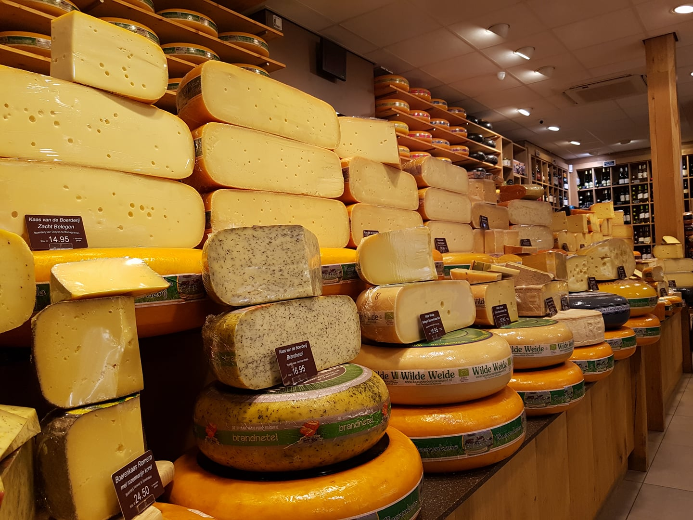

Passie voor kaas
Welkom bij Kaasspeciaalzaak Ed Boele in Den Haag. Al een paar keer waren we de beste of bijna-beste kaasspecialist van Nederland en nog steeds draaien we mee in de top. Want wij hebben een passie voor kaas, die wij graag met onze klanten willen delen.
In onze ruime winkel aan de Fahrenheitstraat hebben we een assortiment kazen om U tegen te zeggen. Een overvloed aan Nederlandse en buitenlandse heerlijkheden. En elke kaas heeft z’n eigen verhaal. Een verhaal dat wij u graag doorvertellen.

Winnaar!
In 2016 zijn wij Nederlands Beste Buitenlandse Kaasspecialist geworden!